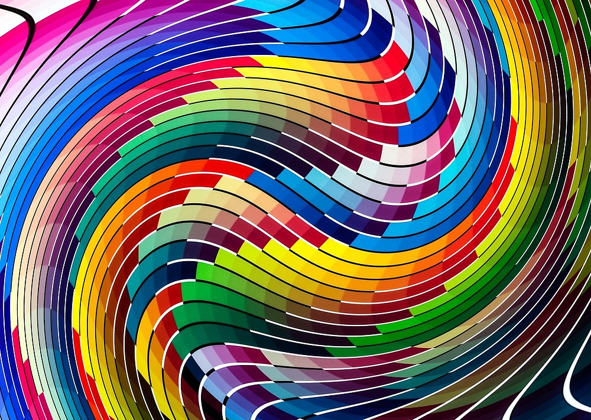

PROPIEDADES DE LA IMAGEN DIGITAL
¿Que es?

Una imagen digital posee diversas propiedades que determinan su calidad y uso: la resolución, que indica la cantidad de píxeles que la conforman; las dimensiones, que expresan su tamaño en píxeles; la profundidad de color, que define cuántos colores puede mostrar cada píxel; el brillo y el contraste, que influyen en la claridad y percepción de los detalles; el formato de archivo, que determina si usa compresión con pérdida o sin pérdida; el tamaño de archivo, que depende de la resolución y el formato; los modelos de color (como RGB, CMYK o HSB) que organizan la información cromática; la frecuencia espacial, que refleja el nivel de detalle en la imagen; y el histograma, que muestra la distribución de tonos y colores. Todas estas propiedades permiten representar, almacenar y manipular las imágenes digitales en distintos contextos como pantallas, impresión, diseño o análisis científico.
Propiedades de la imagen digital
Resolución
Cantidad de píxeles en la imagen, expresada como ancho × alto (ejemplo: 1920×1080).
También puede medirse en dpi (dots per inch) o ppp (píxeles por pulgada) en impresión.
A mayor resolución → más detalle y nitidez.
Dimensiones
El tamaño en píxeles de la imagen (ejemplo: 800×600 px).
Diferente a la resolución física, que depende de la pantalla o medio de impresión.
Contraste
Diferencia entre las zonas claras y oscuras de la imagen.
Diferencia entre las zonas claras y oscuras de la imagen.
Formato de archivo
Forma en que se guardan los datos de la imagen.
Puede ser:
Con compresión con pérdida (JPEG → se pierde calidad).
Sin pérdida (PNG, TIFF → conserva todos los datos).
Modelos de color
Sistema matemático que define los colores.
RGB (Red, Green, Blue): usado en pantallas.
CMYK (Cyan, Magenta, Yellow, Black): usado en impresión.
HSB/HSV (Hue, Saturation, Brightness/Value): útil en edición.

Procediento para comprimir imagenes digitales
Matriz de Umbral Binario
Función: Los píxeles de la imagen original se comparan con un valor umbral. Si el píxel es mayor que el umbral, se vuelve blanco (255). Si es menor o igual, se vuelve negro (0).
Resultado: Crea un contraste claro donde los objetos se separan del fondo.
Matriz de Umbral Inverso
Función: Invierte la lógica. Si el píxel es mayor que el umbral, se vuelve negro (0). Si es menor o igual, se vuelve blanco (255).
Resultado: Separa el fondo del objeto, pero con los colores invertidos.
Matriz de Umbral de Intervalo
Función: Se utilizan dos umbrales (mínimo y máximo). Los píxeles de la imagen original que caen dentro de un rango de valores se vuelven blancos (255), y los que quedan fuera se vuelven negros (0).
Resultado: Permite aislar solo los píxeles que tienen un nivel de intensidad específico, ignorando los muy oscuros y los muy brillantes.
Matriz de Intervalo de Umbral en Escala de Grises (Operador Inverso)
Función:La matriz original es simplemente la Matriz de Píxeles que representa una porción de la imagen, donde los números (de 0 a 255) indican la intensidad de brillo.
La función del operador aplicado es la Segmentación por Umbral a Cero Inverso. Este método utiliza un valor de umbral (probablemente alrededor de \mathbf{T=100}) para aislar tonos de gris específicos.
El procedimiento es el siguiente: el operador compara cada píxel con el umbral. Los píxeles que están por debajo del umbral (los más oscuros/medios) son mantenidos con sus valores de brillo originales. Por el contrario, los píxeles que están por encima del umbral (los más brillantes) son eliminados y su valor se establece a cero (0), es decir, negro puro.
Resultado: la matriz de salida conserva los detalles de las áreas oscuras y medianas de la imagen, mientras que todas las áreas brillantes son "recortadas" y se vuelven negras. Este proceso es útil para resaltar un rango tonal bajo específico
Checa este link, te dara más informacón sobre las propiedades de imágenes